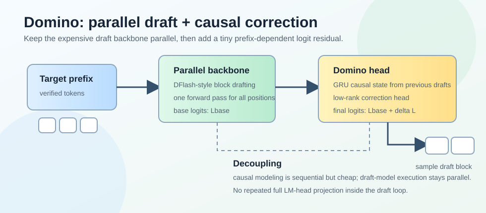
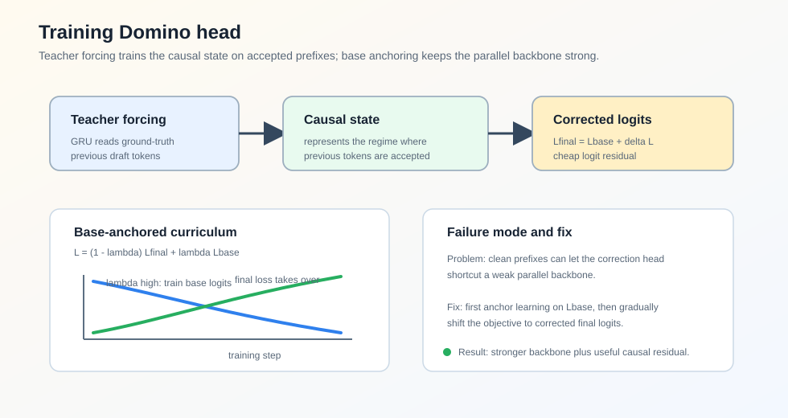
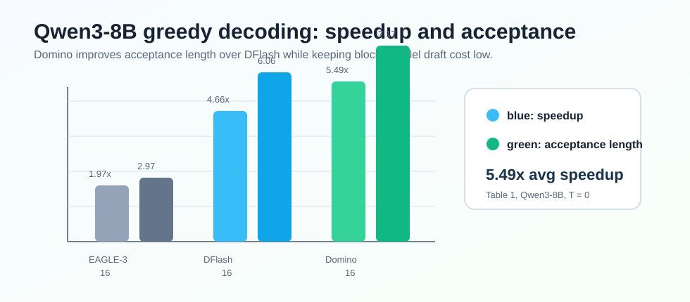

Domino
Abstract
论文 Domino: Decoupling Causal Modeling from Autoregressive Drafting in Speculative Decoding 讨论的是 speculative decoding 中一个很核心的矛盾：高质量 draft 往往需要因果依赖建模，但传统 autoregressive drafter 为了建模这些依赖，又必须串行生成 draft tokens，导致 draft cost 很高。
EAGLE-3 这类 autoregressive drafter 能让后一个 draft token 看到前面已经生成的 draft tokens，所以 acceptance length 通常更好；但生成 个 draft tokens 需要 次 draft forward 和 LM head projection。DFlash 这类 parallel drafter 可以一次生成整个 block，draft cost 低很多，但 block 内 token 之间缺少显式因果依赖，draft quality 会受影响。
Domino 的核心想法是：不要把因果依赖建模和昂贵的 autoregressive draft execution 绑定在一起。它先用一个 parallel draft backbone 并行给出整块 draft logits，再用一个轻量 Domino head 根据前面已经采样出的 draft tokens 做 logit-space residual correction。

论文在 Qwen3-8B 上报告，Domino 在 Transformers backend 下 greedy decoding 平均达到 end-to-end speedup，高于 DFlash 的 ；在 SGLang serving 下也能带来最高约 throughput speedup。
Motivation
Speculative decoding 的 per-token latency 可以写成：
其中：
- ：draft model 生成候选 tokens 的耗时；
- ：target model 并行验证这些候选 tokens 的耗时；
- ：每轮平均推进的 token 数，也就是 average acceptance length，包括 target model 给出的 bonus token。
因此 speedup 可以写成：
这说明 speculative decoding 的最终速度由两个方向共同决定：
- 提高 ，让每次 target forward 接受更多 token；
- 降低 ，避免 draft 阶段把验证节省下来的时间吃掉。
Autoregressive drafting 的优势是质量高。它建模的是：
每个未来 token 都能依赖前面已经 draft 出来的 token，所以更接近 target model 的 autoregressive 分布。但代价是：
也就是说 draft budget 越大，draft cost 越高。
Parallel drafting 的优势刚好相反。它直接预测一个 block：
draft cost 近似为一次 block-level forward 和一次 block-level head projection：
这类方法可以充分利用 GPU 并行能力，但 block 内 token 之间的因果依赖变弱。Domino 要解决的问题就是：能不能保留 parallel drafting 的低成本，同时把 autoregressive drafting 中有用的因果依赖补回来？
Method
Parallel Draft Backbone
Domino 的 backbone 直接采用 DFlash 风格的 parallel draft backbone。给定已经被 target model 验证过的 prefix ，Domino 使用最后一个 verified token 作为 anchor，然后构造一个 masked draft block：
backbone 接收两类输入：
- target model 从 verified prefix 中抽取的 context features ；
- masked draft block 的 token embeddings。
然后一次非 autoregressive forward 产生整个 block 的 hidden states：
未来位置的 preliminary logits 由 frozen target LM head 计算：
这一步和 DFlash 的精神一致：主干 draft computation 保持并行，避免重复调用 draft model。
Domino Head
Domino Head 是论文真正新增的部分。它由两个组件组成：
- causal encoder：用轻量 GRU 汇总当前 block 中前面已经 draft 出来的 tokens；
- low-rank correction head：把 causal state 和 backbone hidden state 结合，产生 logit-space residual correction。
对于第 个 draft 位置，causal encoder 读取前面 token embeddings：
其中 表示当前位置能看到的 prefix-dependent 信息。论文实现中 GRU hidden dimension 为 1024。
然后 Domino head 用低秩瓶颈产生 correction logits：
最终 draft logits 是：
这里的关键是：correction 发生在 logit space，而不是 hidden space。如果在 hidden space 做 correction，每次 causal update 后还要重新经过一次完整 LM head，等于又把昂贵的 full-vocabulary projection 放回串行路径里。Domino 只让 base LM head 在并行路径里算一次，串行 causal branch 只做低秩 residual correction。
Training
Teacher-Forced Causal Encoding
Domino Head 的 causal encoder 需要读取前面的 draft tokens。训练时有两种选择：
- 像 EAGLE-3 的 training-time testing 一样，喂模型自己生成的 prefix；
- 使用 teacher forcing，直接喂 ground-truth prefix。
Domino 选择 teacher forcing。原因是 speculative verification 的机制决定了：第 个 token 是否有意义，前提是前面 个 draft tokens 已经全部被 target model 接受。也就是说，对 acceptance length 有贡献的位置，本来就处在“前缀正确”的 regime。
因此，与其训练 causal encoder 去处理大量 noisy self-generated prefixes，不如直接训练它在 ground-truth prefixes 上学习有用的 causal correction。
Base-Anchored Curriculum
Teacher forcing 也会带来一个副作用：由于 correction branch 训练时看到的是干净前缀，它可能直接 shortcut parallel backbone。这样 final logits 看起来能学好，但 base logits 变弱，backbone 本身没有真正学到强 base distribution。
Domino 用一个 base-anchored curriculum 解决这个问题：
训练开始时 ，主要优化 base logits，强迫 parallel backbone 先学好；随后 线性退火到 0，把优化重心逐渐转移到 final logits，让 Domino head 接管 residual correction。

同时，论文沿用 block-level speculative decoding 中常见的位置衰减权重：
因为 block 越靠前的 token 越重要：如果第一个 token 被拒绝，后面的 token 即使预测正确也不会被接受。
Runtime
Domino Head 虽然引入了一个 sequential correction loop，但它非常轻量。论文使用 fused Triton kernels 和 CUDA Graphs 减少 kernel launch 与 Python overhead。
在论文 Figure 1 的 latency setting 下，Domino Head 的 latency 从 降到 。相比 DFlash，Domino 增加约 56M 参数，即 ，总 draft-then-verify latency 只增加约 ，但 average acceptance length 提升约 。
Experiments
Main Results
论文主要在 Qwen3-4B 和 Qwen3-8B 上评估，任务覆盖：
- Math：GSM8K、MATH-500、AIME25
- Code：HumanEval、MBPP、LiveCodeBench
- Chat：MT-Bench、Alpaca
训练数据使用 mlabonne/open-perfectblend，并用对应 target model 重新生成 responses。所有 Domino 实验默认 draft block size 为 16，parallel draft backbone 为 5 layers，GRU hidden size 为 1024，low-rank correction dimension 为 256。
在 Qwen3-8B、temperature = 0、Transformers backend 下：
| Method | Avg. Speedup | Avg. Acceptance Length |
|---|---|---|
| EAGLE-3, tree size 16 | 2.97 | |
| EAGLE-3, tree size 60 | 3.41 | |
| DART, tree size 60 | 2.82 | |
| DFlash, block size 16 | 6.06 | |
| Domino, block size 16 | 7.17 |

可以看到，Domino 相比 DFlash 的主要收益来自更高的 acceptance length：平均 从 6.06 提升到 7.17，而 draft 阶段仍保持 parallel backbone 的低成本。
在 temperature = 1 的采样场景下，Qwen3-8B 的平均 speedup：
| Method | Avg. Speedup | Avg. Acceptance Length |
|---|---|---|
| DFlash, block size 16 | 5.18 | |
| Domino, block size 16 | 5.91 |
这说明 Domino 的 causal correction 不只在 greedy decoding 有效，在 sampling decoding 下也能提升 draft quality。
Serving Throughput
论文也在 SGLang 中评估高并发 throughput。以 Qwen3-8B 为例：
| Task | Concurrency | Baseline TPS | DFlash | Domino |
|---|---|---|---|---|
| GSM8K | 2 | 184 | ||
| GSM8K | 8 | 655 | ||
| GSM8K | 32 | 1713 | ||
| MBPP | 2 | 183 | ||
| MBPP | 8 | 635 | ||
| MBPP | 32 | 1428 |
高并发下 speedup 会下降，这是 serving 系统里常见现象：batching、verification 和 memory bandwidth 的影响会变强。但 Domino 仍然普遍高于 DFlash，说明 acceptance length 的提升能转化成实际 serving throughput。
Ablation
Same-Data Comparison
为了排除训练数据差异，论文在 ShareGPT 上用相同 16-token draft budget 训练多个 baseline。结果显示三类方法的 trade-off 很清楚：
- EAGLE-3 acceptance length 高，但串行 draft overhead 大；
- DFlash draft overhead 低，但 acceptance length 较低；
- Domino 在 acceptance length 和 draft cost 之间取得更好平衡。
例如在 GSM8K 上：
| Method | Avg. Acceptance Length | Concurrency 1 | Concurrency 8 | Concurrency 32 |
|---|---|---|---|---|
| EAGLE-3 | 5.01 | |||
| DFlash | 3.90 | |||
| Domino | 4.65 |
EAGLE-3 在高并发时甚至可能低于 baseline，因为 sequential draft cost 被放大；Domino 的 acceptance length 虽然不一定超过 EAGLE-3，但因为 draft 路径更轻，整体吞吐更好。
Training Strategy
训练策略 ablation 有两个结论：
| Strategy | Avg. Acceptance Length |
|---|---|
| Training-time testing | 3.80 |
| Teacher forcing | 3.96 |
| Teacher forcing + curriculum | 4.19 |
Teacher forcing 比 TTT 更好，说明 causal encoder 应该专注于“前缀已经正确”的 accepted-prefix regime。Curriculum 进一步提升，是因为它避免 correction branch 过早 shortcut backbone。
Domino Head
论文直接关闭 Domino Head 做 ablation：
| Method | Avg. Acceptance Length | Avg. Speedup |
|---|---|---|
| w/o Domino Head | 3.49 | |
| w/ Domino Head | 4.19 |
这说明提升不是单纯来自 DFlash backbone 或训练设置，而是来自 prefix-dependent causal correction 本身。
Takeaway
Domino 的贡献可以概括成一句话：把因果依赖建模从昂贵的 autoregressive draft execution 里拆出来，放进一个轻量的 logit correction branch 中。
它和 DFlash 的关系也很清楚：
- DFlash 证明 block-parallel drafting 可以大幅降低 ；
- Domino 在 DFlash 的基础上补回 block 内因果依赖，提高 ；
- 最终 speedup 来自更好的 trade-off。
我认为这篇论文最有价值的点不是 GRU 或 low-rank head 本身，而是它给 speculative decoding 提供了一个很实用的设计原则：不要为了建模依赖就把整个 draft model 拉回串行执行；只让必要的依赖路径串行，并且让它足够轻。
Limitation
论文也提到几个限制：
- Domino 主要解决 inference acceleration，不降低训练或 finetuning 成本；
- 当前实现主要适配 SGLang，其他 serving framework 还需要系统评估；
- 实际 speedup 与硬件平台相关，memory bandwidth、compute capability 和 kernel efficiency 都会影响收益。
因此 Domino 更像是一个很强的 speculative decoding system design，而不是可以无条件迁移到所有部署环境的纯算法改进。
 wechat
wechat alipay
alipay